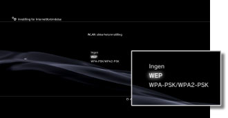
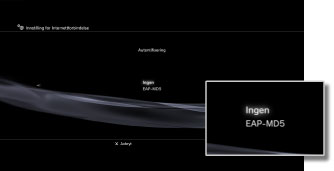
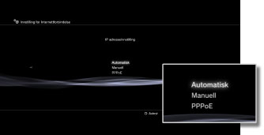
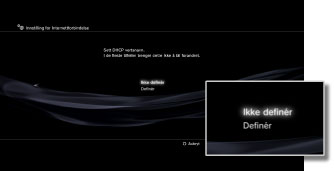
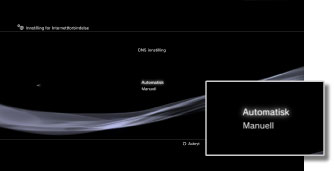
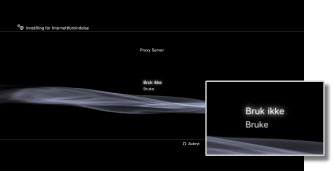
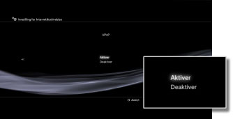

Innstillinger > Nettverksinnstilling > Innstilling for bindelse (avanserte innstillinger)
Innstilling for bindelse (avanserte innstillinger)
Hvis du ikke kan koble til Internett med de grunnleggende innstillingene, må du endre innstillingene etter behov. Juster hvert element etter behov for ditt spesifikke nettverksmiljø.
1. |
Velg |
|---|---|
2. |
Velg [Innstilling for Internettforbindelse]. |
3. |
Velg [Brukerdefinert]. |
 (Innstillinger) >
(Innstillinger) >  (Nettverksinnstilling).
(Nettverksinnstilling).Forbindelsesmetode
Sett metoden for tilkobling til Internett. Denne innstillingen er kun tilgjengelig på PS3™-systemer som er utstyrt med trådløs LAN.

| Kabel forbindelse | Opprett en kabelforbindelse med en Ethernet-kabel |
|---|---|
| Trådløs | Opprett en trådløs forbindelse via et trådløst LAN |
WLAN Innstilling
Angi SSID for tilgangspunktet. Denne innstillingen er bare tilgjengelig på PS3™-systemer som har den trådløse LAN-funksjonen.
| Scanne | Skann for å finne et tilgangspunkt i nærheten. Velg denne innstillingen når du ikke vet SSID til tilgangspunktet. Systemet oppdager tilgangspunkter i nærheten og viser informasjon om SSID og sikkerhetsinnstillinger. |
|---|---|
| Manuell inntasting | Angi tilgangspunktet ved å skrive inn SSID-en manuelt med et tastatur. Velg denne innstillingen når du vet SSID. |
| Automatisk | Bruk funksjonen for automatisk innstilling på tilgangspunktet. Denne innstillingen er bare tilgjengelig i regioner der det selges PS3™-systemer med støtte for denne funksjonen. Velg denne innstillingen når du bruker et tilgangspunkt som støtter automatisk konfigurering. Følg instuksjonene på skjermen. |
WLAN sikkerhetsinnstilling
Angi en krypteringsnøkkel for et tilgangspunkt. Denne innstillingen er bare tilgjengelig på PS3™-systemer som har den trådløse LAN-funksjonen.

| Ingen | Ikke angi en krypteringsnøkkel. |
|---|---|
| WEP | Angi en krypteringsnøkkel. Du kan angi krypteringsnøkkelen i den neste skjermen. Krypteringsnøkkelen vises som en rekke stjerner. |
| WPA-PSK / WPA2-PSK |
Autentifisering
Disse innstillingene er tilgjengelig på PS3™-systemer som selges i Korea, og de er bare tilgjengelig på PS3™-systemer som er utstyrt med den trådløse LAN-funksjonen.

| Ingen | Ikke angi autentiseringsinformasjon. |
|---|---|
| EAP-MD5 | Angi autentiseringsinformasjonen når du bruker offentlige WLAN-tjenester. Angi bruker-ID og passord på den neste skjermen. Du finner mer informasjon i informasjonen fra den offentlige WLAN-tjenesteleverandøren. |
Ethernet-driftsmodus
Angi overføringshastigheten og driftsmetoden for Ethernet-data. Vanligvis bør du velge [Auto-søk].
| Auto-søk | Angi grunnleggende innstillinger. |
|---|---|
| Manuelle innstillinger | Juster overføringshastigheten og driftsmetoden for Ethernet-data manuelt. |
IP adresseinnstilling
Angi metoden for å hente inn en IP-adresse når du kobler til Internett.

| Automatisk | Bruk IP-adressen som er tilordnet av DHCP-serveren. Du kan angi serververtsnavnet på den neste skjermen. |
|---|---|
| Manuell | Angi IP-adressen manuelt. Du kan angi verdiene for IP-adressen, delnettmasken, standardruteren og primær og sekundær DNS på den neste skjermen. |
| PPPoE | Koble til Internett med PPPoE. Du kan angi bruker-ID og passord på den neste skjermen. |
DHCP
Angi DHCP-vertsnavnet. Vanligvis skal du velge [Ikke definér].

| Ikke definér | Ikke angi DHCP-vertsnavnet. |
|---|---|
| Definér | Angi DHCP-vertsnavnet. |
DNS innstilling
Angi DNS-serveren.

| Automatisk | Hent DNS-serveradressen automatisk. |
|---|---|
| Manuell | Skriv inn DNS-serveradressen manuelt. |
MTU
Konfigurer MTU-verdien som brukes når du overfører data. Vanligvis velger du [Automatisk].
| Automatisk | Angi MTU-verdien automatisk. |
|---|---|
| Manuell | Angi maksimal størrelse for datapakker (i byte) som kan sendes i én overføring. |
Proxy Server
Angi proxy-serveren som skal brukes.

| Bruk ikke | Ikke bruk en proxy-server. |
|---|---|
| Bruke | Bruk en proxy-server. Du kan angi proxy-serveradressen og portnummeret på den neste skjermen. |
UPnP
Angi for å aktivere eller deaktivere UPnP (Universal Plug and Play).

| Aktiver | Aktivere UPnP. |
|---|---|
| Deaktiver | Deaktivere UPnP. |
Tips
Hvis [Deaktiver] er angitt, kan det hende at kommunikasjonen med andre er begrenset når du bruker funksjonen for stemme-/videoprat eller kommunikasjonsfunksjonene i spill.